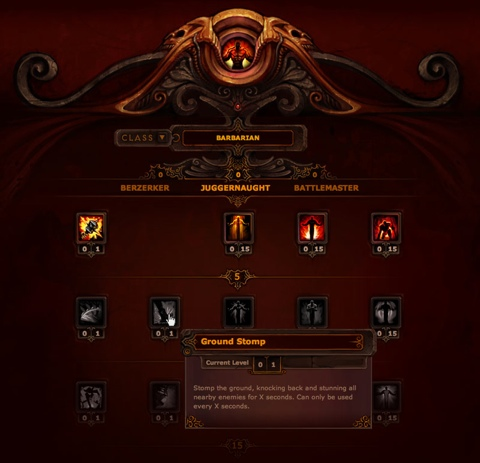

The Job
Refer to books by name
| z, ? | toggle help (this) |
| space, → | next slide |
| shift-space, ← | previous slide |
| d | toggle debug mode |
| ## <ret> | go to slide # |
| c, t | table of contents (vi) |
| f | toggle footer |
| r | reload slides |
| n | toggle notes |
| p | run preshow |
| P | toggle pause |
Refer to books by name
job you want, not just any job
so many aspects: SCM, langs, frameworks, (team)
IE hacks, mobile hacks, inline-block... that's now
...instilled a sense of 'oh crap'
instilled a sense of 'oh crap'
... I love twitter
... so what is twitter, exactly?
... if you're into ruby
ADVANCE!
mentor
lathe -> mill

"hub50" or volunteer for 2 4-hour sessions. $299, $249